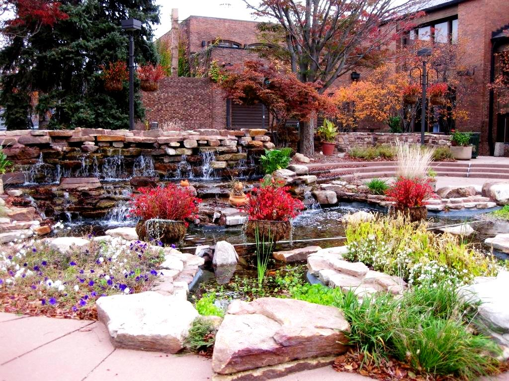

This picture of the campus is the full-size picture from the gallery page, but it has been resized to display smaller. Resizing an image only changes the size that the image displays. It does not make the file storage size of the image any smaller. Because the file storage size stays the same, resizing an image does not speed up the time that it takes the browser to display the picture in a web page. The full-size image that was selected from the gallery takes up approximately 233K .
Thumbnail images can be used to provide a small version of an image that will download quickly. If the user is interested in waiting for the full-size image to display, they can click on the thumbnail to be taken to the full size version of the picture. Thumbnails can be linked to the image file itself or the full-size image can be put on a web page that has a link back to the original page. If the link from the thumbnail goes to the image file, rather than a web page, instructions should be provided to the user to return to the original page by using the Back button in the browser. The file storage size of this thumbnail image is 4K.